Dioses olímpicos
Los dioses olímpicos constituyeron el panteón principal de la mitología griega, residiendo en la cumbre del sagrado Monte Olimpo. Este poderoso grupo de doce deidades, liderado por Zeus, el dios del trueno, gobernaba el cosmos. Cada miembro personificaba fuerzas de la naturaleza o aspectos de la experiencia humana, desde la sabiduría de Atenea hasta la guerra de Ares. Lejos de ser perfectos, los olímpicos poseían rasgos marcadamente humanos: sentían celos, ira, amor y vanidad. Su culto y leyendas no solo explicaban el origen del mundo, sino que moldearon la cultura, el arte y la filosofía de la antigua Grecia.
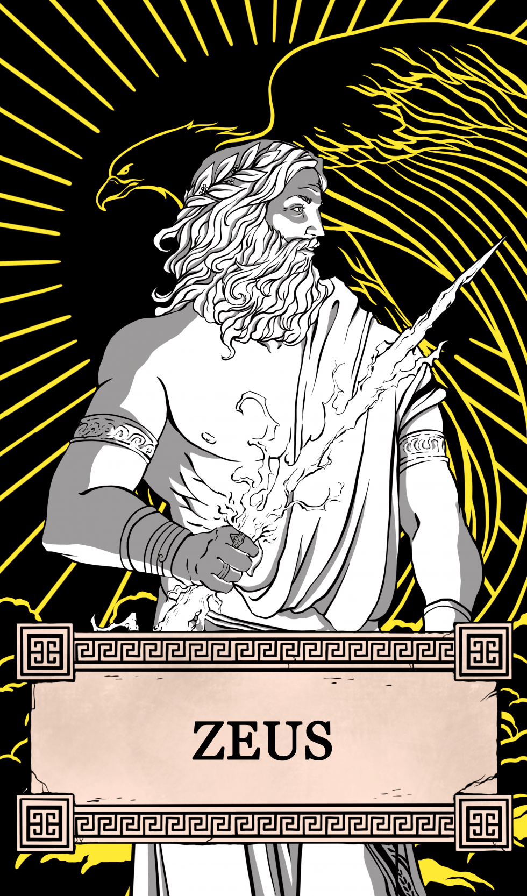
Dios del rayo y rey del Olimpo. Conocido por gobernar con sabiduría y firmeza.
ZEUS, REY DEL OLIMPO
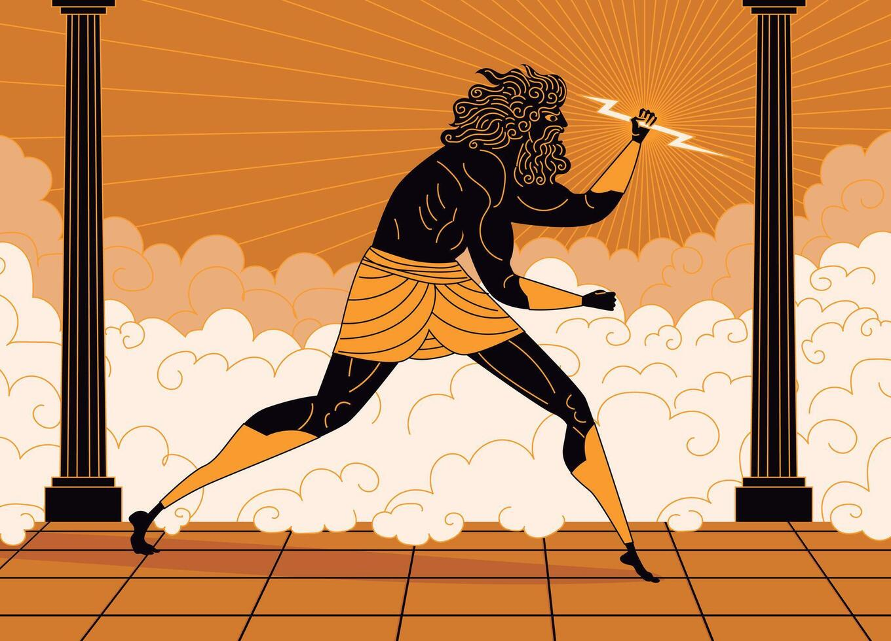
Zeus es el dios supremo de la mitología griega, gobernante absoluto del monte Olimpo y señor del cielo y el trueno. Hijo menor de los titanes Cronos y Rea, logró liberar a sus hermanos y derrocar a su padre en una épica guerra conocida como la Titanomaquia. Armado con su temible rayo forjado por los cíclopes, mantuvo el orden cósmico y la justicia entre dioses y mortales. Casado con la diosa Hera.
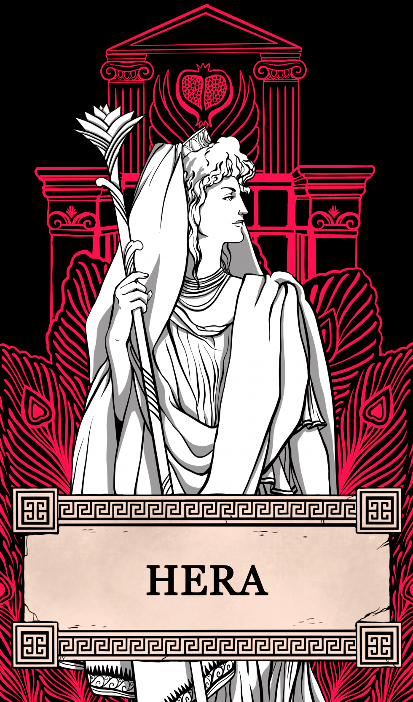
Es la diosa del matrimonio y reina del Olimpo, ya que es la tercera esposa de Zeus.
HERA, REINA DEL OLIMPO
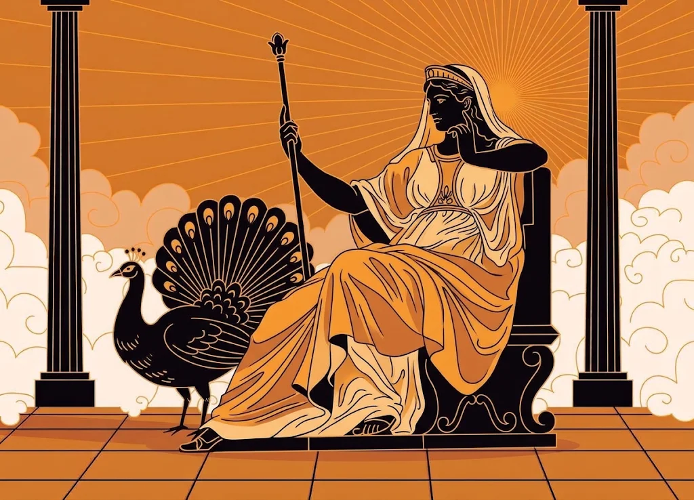
Hera es la reina de los dioses en la mitología griega, hija de Crono y Rea. Como esposa y hermana de Zeus, preside el Olimpo y es la protectora sagrada del matrimonio, las mujeres y el parto. Su imagen proyecta majestuosidad y poder, acompañada frecuentemente por sus símbolos característicos: el pavo real, la granada y la diadema real. Aunque es venerada por defender la fidelidad conyugal.
POSEIDÓN, DIOS DEL MAR
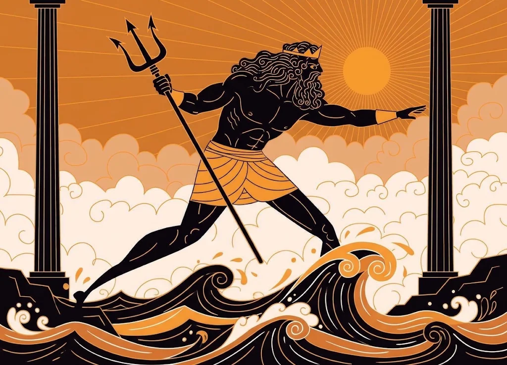
Poseidón es el poderoso dios de los mares, las tormentas y los terremotos en la mitología griega. Hijo de Crono y Rea, recibió el dominio de los océanos tras derrotar a los titanes junto a sus hermanos Zeus y Hades. Empuñando su temible tridente, puede desatar maremotos devastadores o calmar las aguas para proteger a los marineros. Además de gobernar los abismos, es venerado como el creador y protector de los caballos.
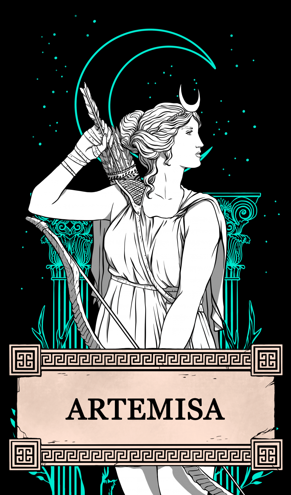
Diosa de la Luna, la castidad y la caza, hija de Zeus y Leto, y melliza de Apolo.
ARTEMISA, DIOSA DE LA CAZA
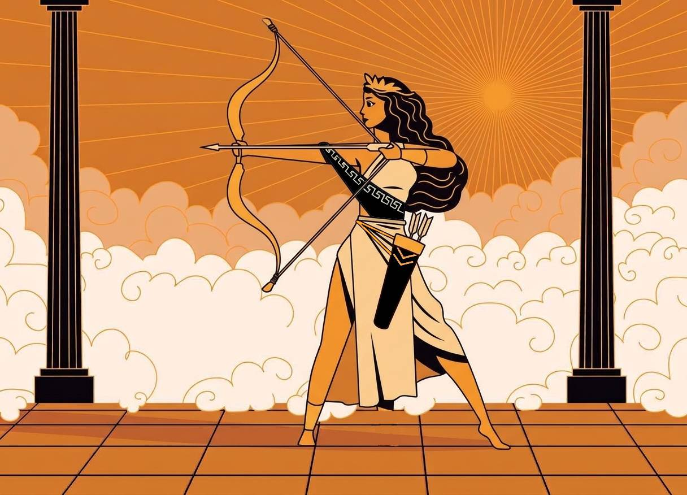
Artemisa es la diosa griega de la caza, los bosques, los animales salvajes, la virginidad y la luna. Hija de Zeus y Leto, y hermana gemela de Apolo, recorre la naturaleza armada con un arco y flechas de plata, acompañada por un séquito de ninfas y perros de caza. Es una feroz protectora de las mujeres jóvenes y de la naturaleza indómita, castigando severamente a quienes profanan sus dominios o faltan al respeto a su pureza.
AFRODITA, DIOSA DEL AMOR
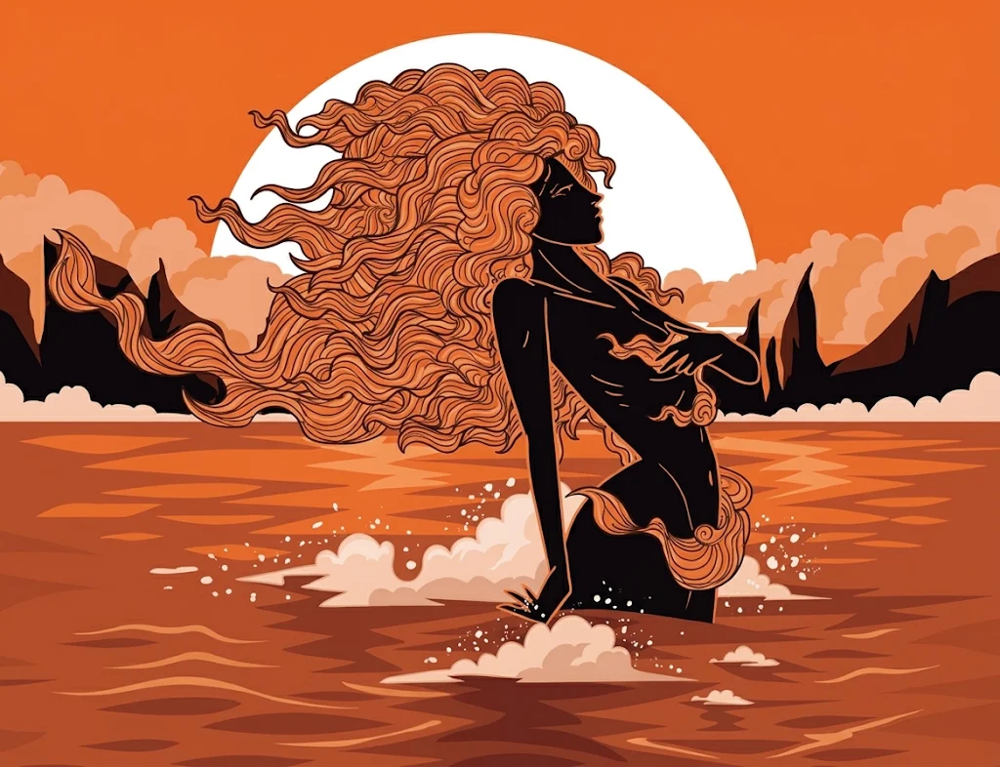
Afrodita es la diosa griega del amor, la belleza, el deseo y la fertilidad. Según el mito más célebre, nació de la espuma del mar cerca de Chipre, emergiendo con una gran hermosura. Aunque estaba casada con el herrero Hefesto, mantuvo apasionados romances, destacando su unión con Ares, el dios de la guerra. Acompañada por palomas, rosas y mirto, su poder sobre los corazones era irresistible, llegando incluso a desencadenar la guerra de Troya.
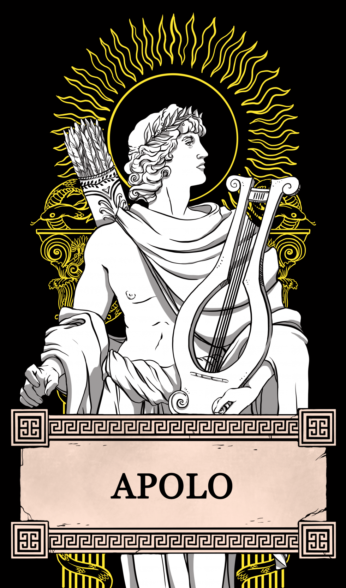
Dios de la luz, el Sol y las artes, hijo de Zeus y Leto, y mellizo de Artemisa.
APOLO, DIOS DEL SOL
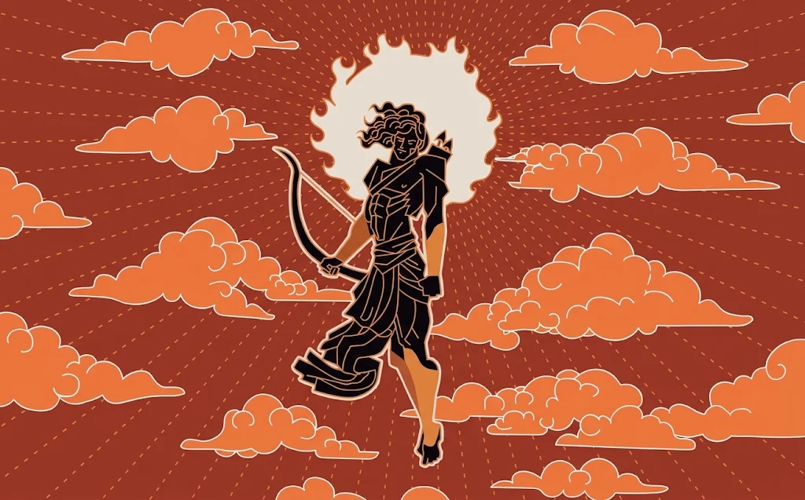
Apolo es el dios griego del sol, la luz, la música, la poesía, la profecía y la curación. Hijo de Zeus y Leto, y hermano gemelo de Artemisa, encarna el ideal clásico de la belleza masculina, la armonía y la razón. Portando su lira dorada y su arco de plata, inspira a los artistas y preside las artes junto a las musas. Además, es venerado como una deidad oracular suprema, comunicando el futuro a través de su santuario en Delfos.
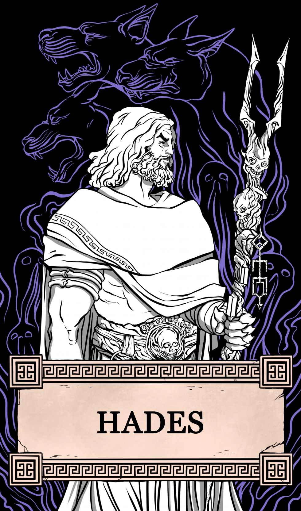
Dios del Inframundo, el mundo subterráneo donde habitan las almas de los difuntos.
HADES, DIOS DEL INFRAMUNDO
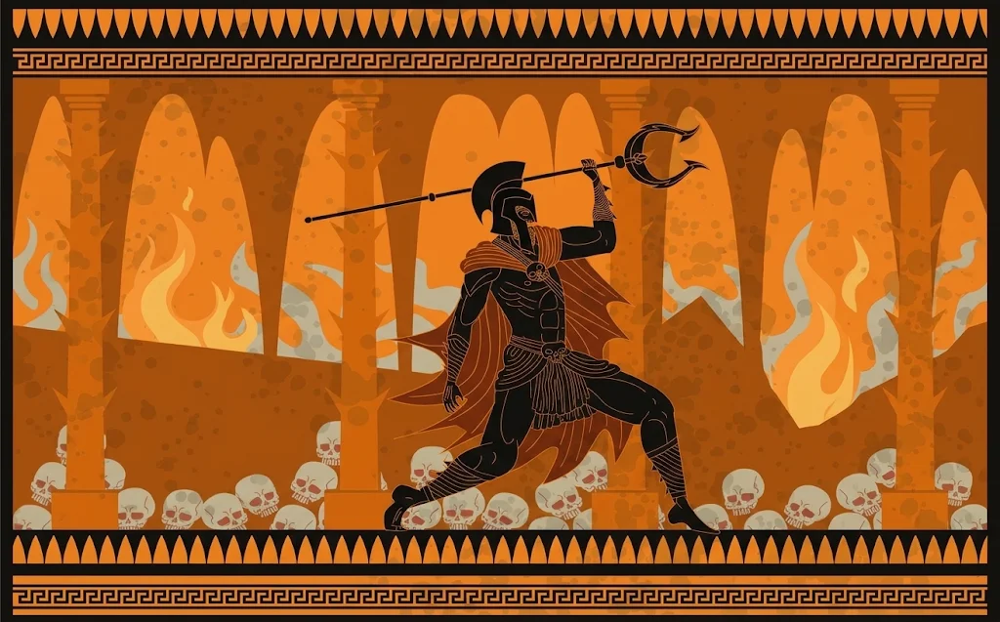
Hades es el dios griego del inframundo y soberano de los muertos. Hijo mayor de Crono y Rea, recibió el dominio del mundo subterráneo tras repartirse el universo con sus hermanos Zeus y Poseidón. Acompañado por su esposa Perséfone y su temible perro de tres cabezas, Cerbero, gobierna un reino sombrío donde las almas descansan eternamente. Aunque suele ser vínculado con la muerte, aunque los antiguos griegos no lo veían como una deidad maligna.
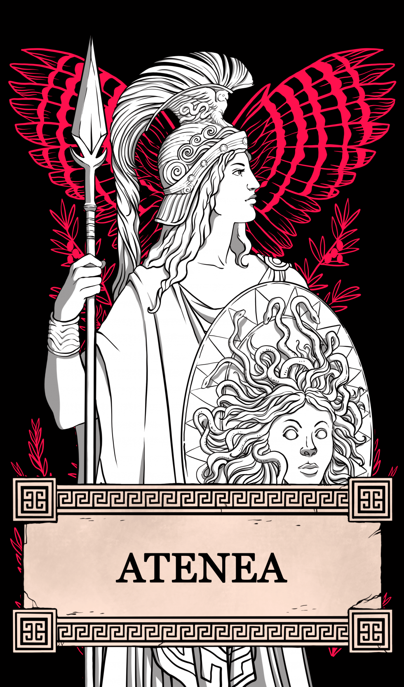
Diosa de la sabiduría y la guerra estratégica, patrona de la ciudad de Atenas.
ATENEA, DIOSA DE LA SABIDURÍA
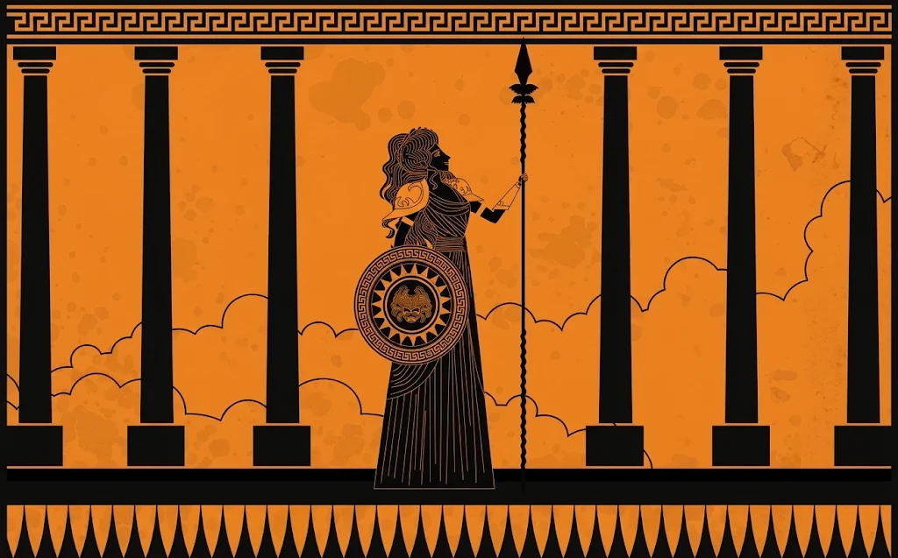
Atenea es la diosa griega de la sabiduría, la estrategia militar, la justicia y las artes. Según el mito, nació completamente armada y adulta de la frente de Zeus, encarnando la inteligencia y la razón. A diferencia del violento Ares, ella representa el aspecto táctico y disciplinado de la guerra, además de proteger el conocimiento y la artesanía. Acompañada por una lechuza y con su égida y lanza, es la venerada patrona de Atenas.
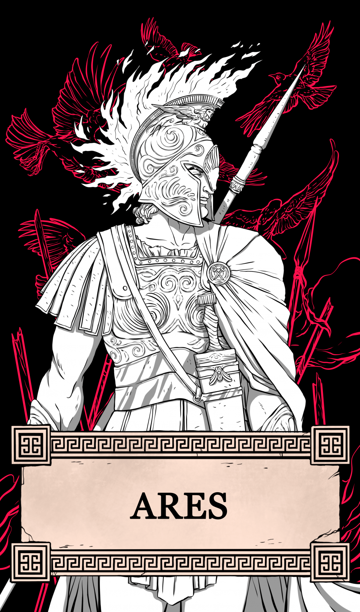
Dios de la guerra, hijo de Zeus y Hera. Representa todas las atrocidades de la guerra.
ARES, DIOS DE LA GUERRA
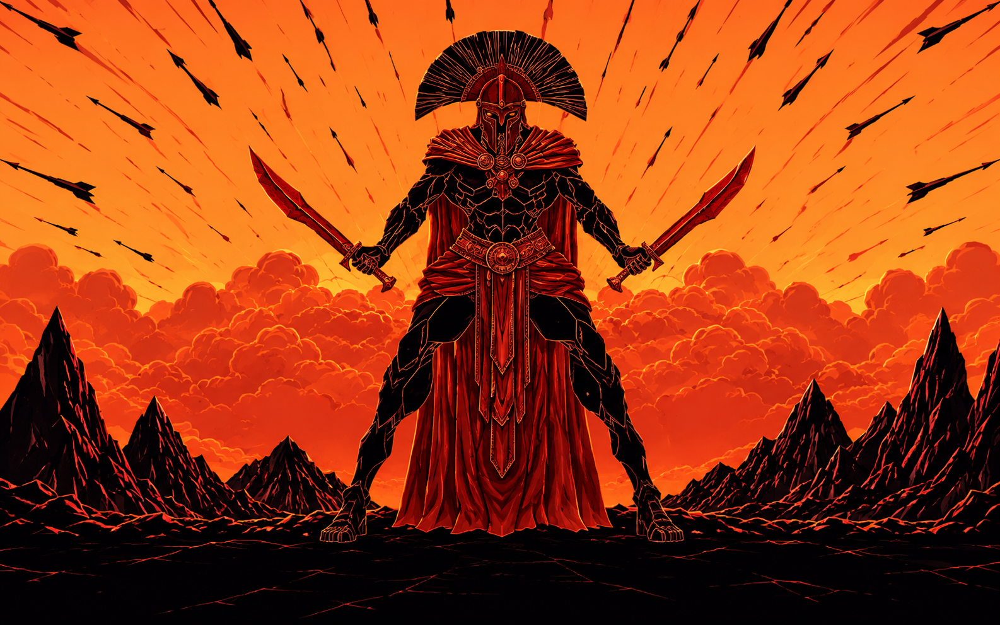
Ares es el dios griego de la guerra, la violencia, el derramamiento de sangre y la brutalidad en el combate. Hijo de Zeus y Hera, personifica el aspecto más salvaje, caótico e impulsivo de las batallas, en claro contraste con la estrategia reflexiva de su hermana Atenea. Aunque es temido por su furia implacable y sed de destrucción, también simboliza la valentía física y el ardor guerrero.
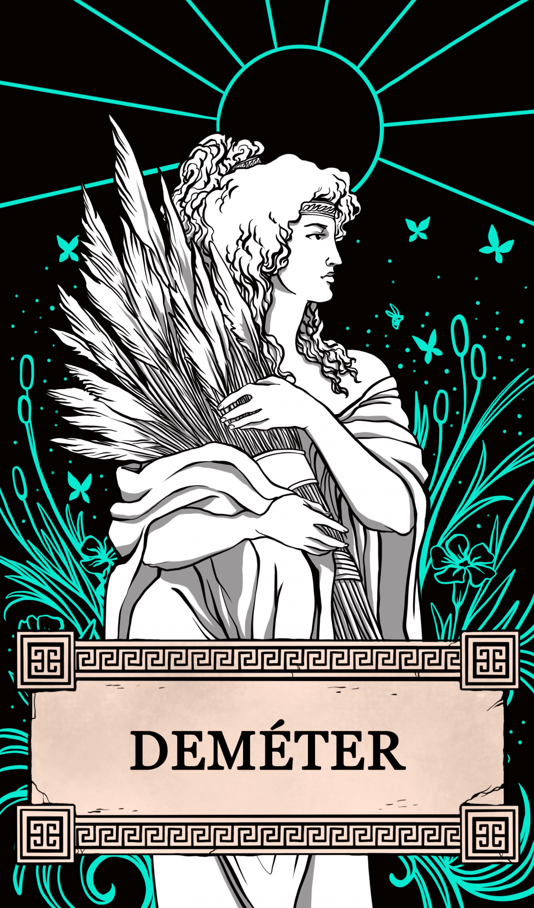
Diosa de la agricultura y las cosechas. Es madre de Perséfone, junto con Zeus.
DEMÉTER, DIOSA DE LA AGRICULTURA
Deméter es la diosa griega de la agricultura, las cosechas, la fertilidad de la tierra y el ciclo de las estaciones. Hija de Crono y Rea, enseñó a la humanidad el arte de cultivar el trigo y el grano, sustentando así la civilización. Su mito más célebre narra su inmenso dolor cuando Hades raptó a su hija Perséfone; sumida en la tristeza, Deméter detuvo el crecimiento de las plantas, provocando el primer invierno.
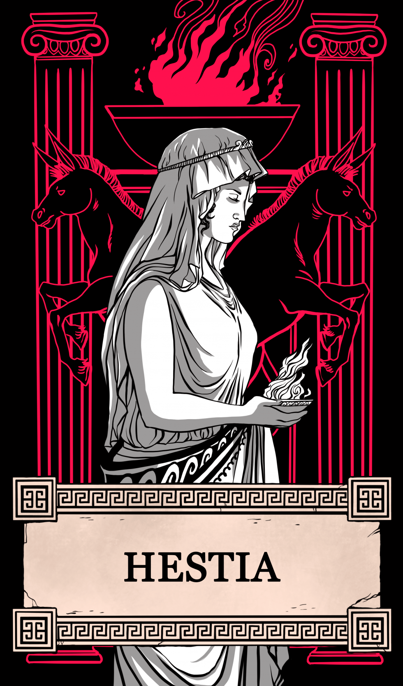
La diosa del hogar y protectora del fuego sagrado. Se la asocia un carácter pacífico.
HESTIA, DIOSA DEL HOGAR
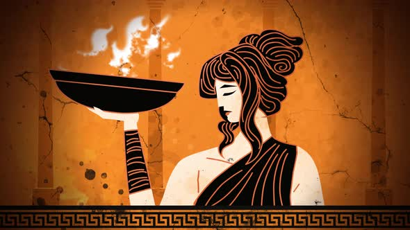
Hestia es la diosa griega del hogar, la familia, el orden doméstico y el fuego sagrado. Primogénita de Crono y Rea, rechazó las propuestas matrimoniales de Poseidón y Apolo para mantener su virginidad eterna, recibiendo de Zeus el honor de presidir cada hogar y templo. A diferencia de otros dioses olímpicos, Hestia nunca participó en disputas ni guerras, simbolizando la paz, la estabilidad y la hospitalidad.
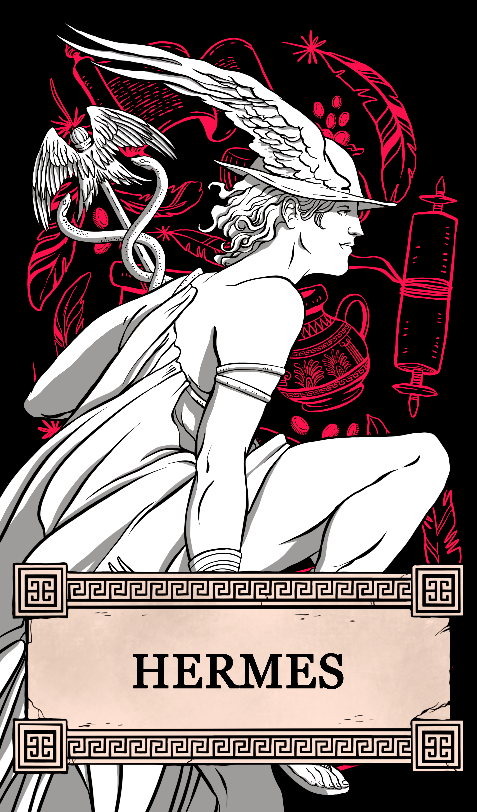
Hijo de Zeus y la pléyade Maya, es el Dios del comercio y heraldo de los dioses.
HERMES, EL MENSAJERO DE LOS DIOSES
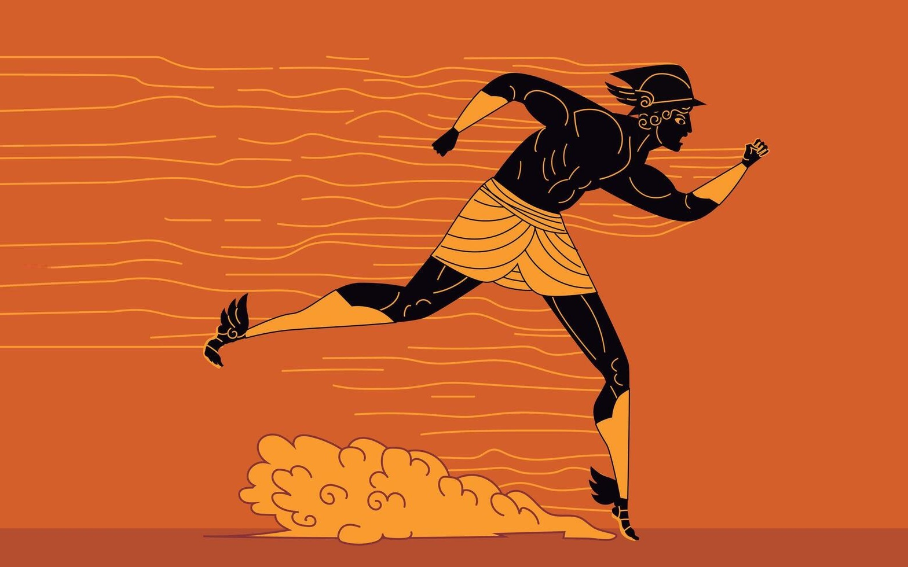
Hermes es el dios griego de los viajeros, el comercio, la elocuencia, los ladrones y mensajero de los dioses. Hijo de Zeus y Maya, destaca por su astucia, rapidez y sentido del humor. Calzado con sandalias aladas y portando el caduceo, viaja velozmente entre el Olimpo, la tierra y el inframundo, guiando también las almas de los difuntos hacia el reino de Hades. Desde su nacimiento demostró su ingenio al robar el ganado de Apolo.
Grandes leyendas
Las grandes leyendas de la mitología griega abarcan tanto los relatos fundacionales del cosmos como las
hazañas de héroes y dioses. Más allá del entretenimiento, estas leyendas funcionaban como guía moral y
cultural para los antiguos griegos.
Entre las principales leyendas se encuentran la Guerra de Troya,
narrado en la Ilíada y la Odisea de Homero. Hoy en día, siguen siendo un pilar fundamental de la literatura,
el arte y el pensamiento occidental, ofreciendo símbolos universales sobre la condición humana.
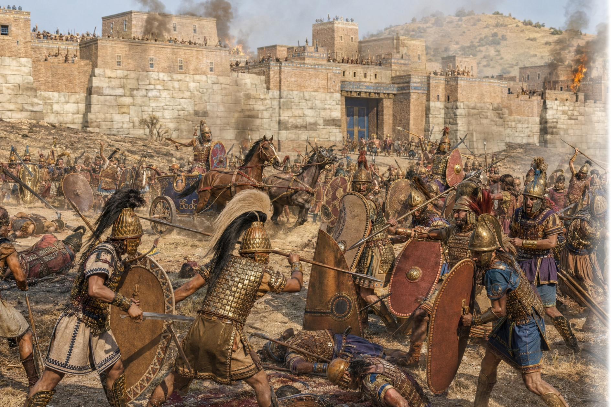
Guerra de Troya
El rapto de Helena, reina de Esparta, desata la guerra entre los aqueos contra la ciudad de Troya para rescatarla. Los héroes de Grecia se unen en la contienda.
La Odisea
La Odisea es un poema épico griego de 24 cantos atribuido a Homero y compuesto en el siglo VIII a. C. Narra el regreso de Odiseo a Ítaca tras la guerra de Troya.
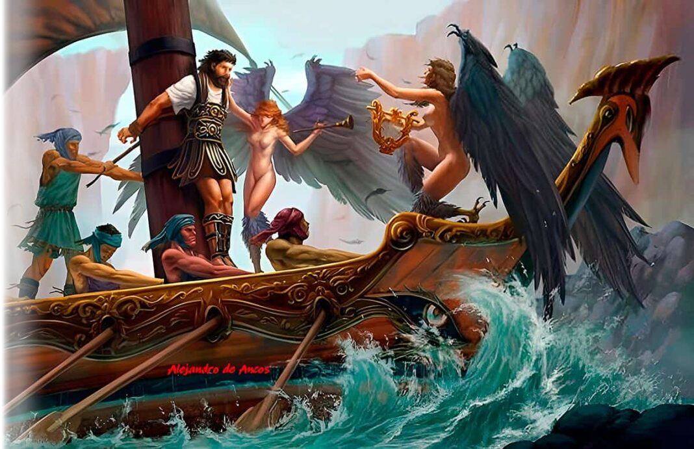
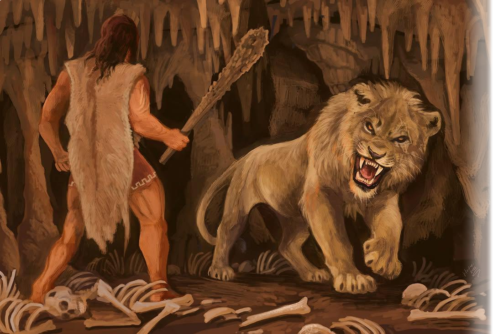
12 trabajos de Heracles
Fueron impuestos por el rey Euristeo como penitencia tras un ataque de locura —provocado por la diosa Hera— en el que el héroe asesinó a su propia familia.
Titanomaquia
La guerra de diez años entre los titanes y los dioses olímpicos por el dominio del universo. Con el apoyo de los Hecatónquiros, los olímpicos vencieron a los titanes en Tesalia.
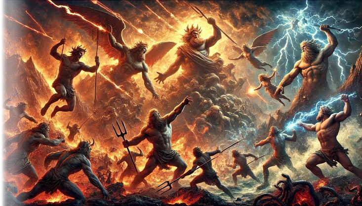
Artículos de la semana
Dios de la semana
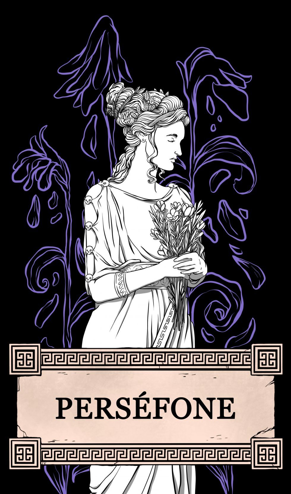
La reina del Inframundo, hija de Zeus y Deméter. Fue raptada por Hades para convertirla en su esposa.
Héroe de la semana
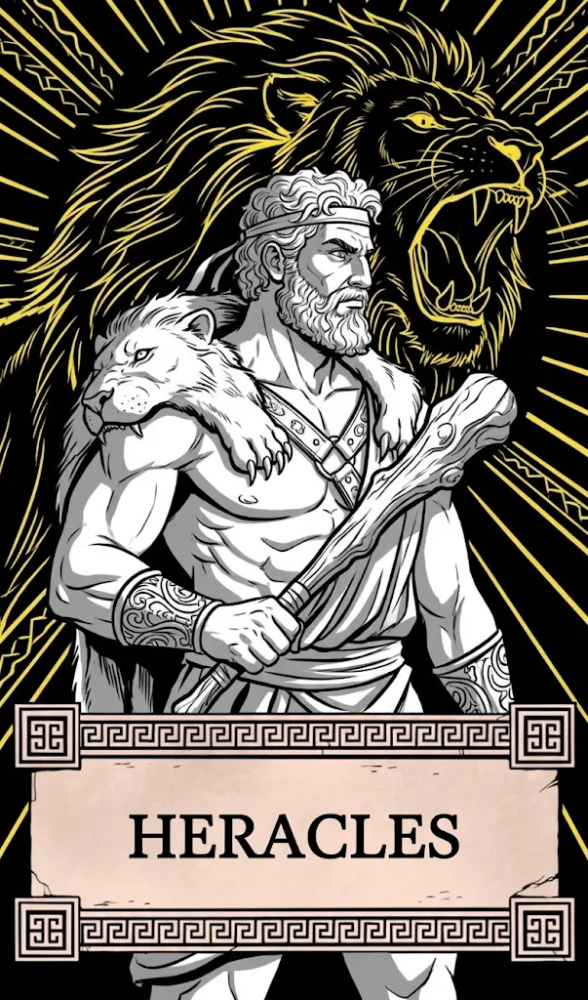
El famoso hijo de Zeus y la mortal Alcmena. Cumplió con las doce pruebas del rey Euristeo.
Leyenda de la semana
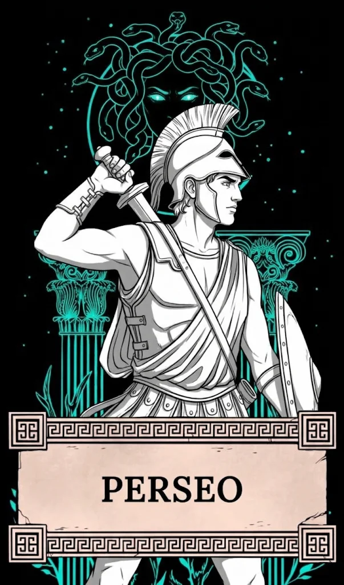
El héroe que logró decapitar a Medusa, su mirada convertía en piedra a quien la observaba directamente.
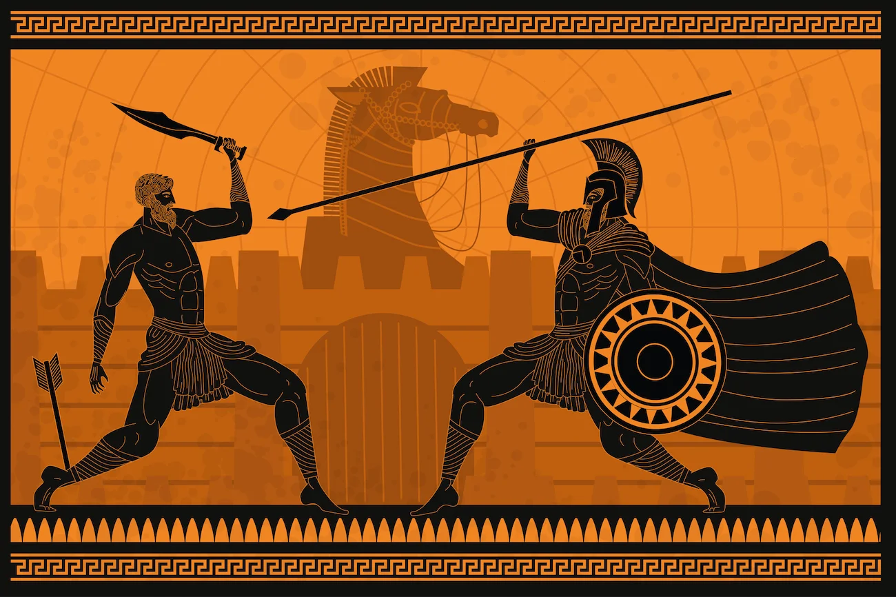